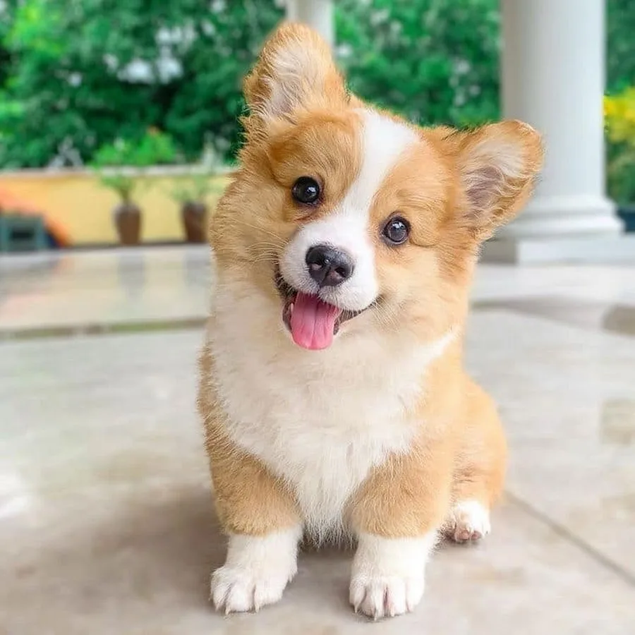
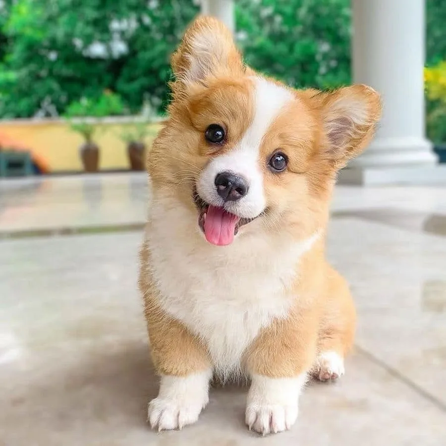

Популярные породы собак
Померанский шпиц
Померанский шпиц выглядит как детская игрушка. Этот пушистый колобочек станет верным другом и звонким лаем скрасит самый пасмурный день.
Краткая информация
- Страна происхождения: Германия
- Вес: 1,4-3,2 кг (желательно около 2 кг)
- Рост (высота в холке): 18-24 см
- Продолжительность жизни: 12-16 лет
Основные моменты
- Померанский шпиц легко находит общий язык с хозяином, к которому испытывает безграничную любовь и верность.
- Это прекрасный друг и компаньон для сознательных детей. От покупки животного для проказников младшего возраста лучше воздержаться.
- Отличается прекрасными сторожевыми качествами и громким «звоночком» извещает о прибытии нежданного гостя.
- Не подходит для содержания в вольере или на цепи. Квартира или загородный дом – идеальное место.
- Померанский шпиц нуждается в тщательном и регулярном уходе, активном отдыхе и длительных прогулках. Прежде чем заводить представителя этой породы, стоит трезво оценить свои силы.
- Собаки любят лаять, чем изрядно докучают соседям, а нередко – и собственным хозяевам.
- При слабохарактерности владельца шпиц склонен проявлять доминантность и упрямство, с которыми нелегко справиться.
- Порода не подходит для начинающих собаководов.
Чихуахуа
Чихуахуа – декоративные собаки экстремально малого размера. Бесконечно преданы хозяину и чрезвычайно самолюбивы.
Краткая информация
- Страна происхождения: Мексика
- Вес: 0,5-3 кг
- Рост (высота в холке): 15-23 см
- Продолжительность жизни: 11-14 лет
Основные моменты
- В отношениях с более крупными собаками ведут себя на равных. Облаять 50-килограммовую овчарку для чихуахуа – обычное дело.
- Способны ладить с другими домашними питомцами, если те согласны признавать их авторитет.
- Идеальные компаньоны, готовые сопровождать хозяина везде, где это только возможно.
- Игривы и активны, но зачастую требуют повышенного внимания к собственной персоне.
- Испытывают сильную привязанность к хозяину и следят за каждым его шагом.
- Легко адаптируются к любой обстановке и могут довольствоваться редкими и короткими прогулками, а при необходимости и полностью обходиться без них.
- Не согласны мириться с одиночеством и длительными отлучками хозяина.
- Очень обидчивы и подвержены частым вспышкам ревности.
- Чихуахуа полностью взрослеют к первому году жизни.
Корги
Корги ─ удивительная собака, любимая порода Ее Величества королевы Великобритании Елизаветы ІІ, маленькая овчарка с большим и бесстрашным сердцем.
Краткая информация
- Страна происхождения: Великобритания
- Вес: 9-13 кг
- Рост (высота в холке): 25-30 см
- Продолжительность жизни: 9-12 лет
Основные моменты
- Корги – собака, идеально подходящая большой и дружной семье. Прекрасно чувствует себя как в условиях городской квартиры, так и в загородном жилье.
- Главные черты характера животного – жизнерадостность, доброжелательность и активность. При практически полном отсутствии агрессивности в поведении, корги – отважная собака с высокоразвитым интеллектом.
- Пемброк – порода собак, которые сильно нуждаются в человеческом обществе. Держать ее на улице, а уж тем более на привязи абсолютно недопустимо.
- Вельш-корги пемброк очень чутко воспринимает настроение своих хозяев и никогда не будет вам докучать некстати.
- Они очень активны и любят подвижные игры, хорошо дрессируются.
- Любовь корги к детям стала уже легендой. Абсолютно безо всякой опаски вы можете оставить с ним даже малыша – пемброк стоически вытерпит все его шалости.
- Как истинно пастушья собака, корги любят и умеют работать в команде. Они не склонны к доминированию, но слушаться будут только хозяина, который относится к ним с пониманием и любовью. Истеричный, нервный и вспыльчивый человек вряд ли может рассчитывать на любовь и дружбу вельш-корги пемброка – слишком уж умна эта собака.
- Уход за животным несложен. Купание нечастое, поскольку шерсть имеет хорошие водоотталкивающие свойства и грязь не собирает. Систематический груминг требуется только два раза в год – во время активной линьки. Питание – сбалансированное. Помня о склонности пемброка к перееданию, нужно контролировать количество пищи.
- Строение тела вельш-корги пемброка требует внимательного отношения к характеру физических нагрузок. Чтобы избежать травм позвоночника, нужно избегать прыжков с высоты на землю. Многие заводчики рекомендуют оберегать щенков от передвижения вниз по лестницам. Не рекомендуется применять шлейку, лучше сразу приучайте пса к ошейнику. Подстилка для питомца не должна быть излишне мягкой. Идеально, если это будет специальный ортопедический матрац.
- Людям, которые собираются становиться заводчиками, следует знать, что эта порода трудна в разведении, поэтому следует посоветоваться со специалистами, чтобы трезво оценить свои силы и принять правильное решение.
Немецкая овчарка
Немецкая овчарка живет бок о бок с человеком с незапамятных времен. Сегодня она является одной из самых популярных и узнаваемых пород собак на планете.
Краткая информация
- Страна происхождения: Германия
- Вес: кобели 30-40 кг, суки 22-32 кг
- Рост (высота в холке): кобели 60-65 см, суки 55-60 см
- Продолжительность жизни: 10-13 лет
Основные моменты
- Немецкие овчарки могут быть как служебными собаками, выполняющими охранные или розыскные функции, так и компаньонами для семей.
- Преданные и покладистые питомцы беспрекословно признают авторитет хозяина.
- Немецкие овчарки входят в тройку самых умных пород собак (вместе с бордер-колли и пуделями).
- Они нуждаются в человеческом обществе и физических нагрузках.
- Отлично ладят с детьми всех возрастов.
- Способны жить не только в помещении, но и в вольере.
- Средняя продолжительность жизни немецкой овчарки – 9-13 лет, после 7 лет необходим строгий контроль за состоянием здоровья.
Йоркширский терьер
Йоркширский терьер – одна из самых популярных в мире комнатно-декоративных пород собак. Йорк очарователен внешне, энергичен, ласков и является отличным компаньоном.
Краткая информация
- Страна происхождения: Англия
- Вес: 2-3,2 кг
- Рост (высота в холке): 18-23 см
- Продолжительность жизни: 12-15 лет
Основные моменты
- Йоркширский терьер – превосходная собака, в характере которой смелость, резвость, выносливость сочетаются с удивительной деликатностью, интеллигентностью и сообразительностью.
- Отличный друг для всех членов семьи, но хозяином считает одного, кому и предан беззаветно.
- Йорк – веселый товарищ для детей и подростков, готовый в любой момент со всей своей энергией присоединиться к играм и забавам.
- Для пожилых людей, особенно одиноких, он станет хорошим компаньоном, преданным и бескорыстным.
- Комфортно чувствует себя как в малогабаритных квартирах, так и в загородных домах.
- Благодаря своей сообразительности, йорк легко поддается дрессировке, однако процесс осложняет его неусидчивость.
- Йоркширский терьер, как любая декоративная собака, требует внимания к своей внешности. Длинношерстые собаки нуждаются в еженедельном купании, короткошерстых йорков купают раз в 2-3 недели. Стандартные стрижки можно научиться делать самостоятельно, а модельные прически создают груминг-мастера. Во время процедур собака любит покапризничать.
- Йорк требователен к еде и переборчив. Многие продукты ему противопоказаны.
- К здоровью этой крошечной собаки нужно относиться с особым вниманием и стараться уберечь ее от травм.
- Чтобы купить гарантированно чистокровного йоркширского терьера, следует обратиться к заводчику с проверенной репутацией.
Лабрадор
Лабрадор – одна из самых популярных пород в современном мире. Это идеальный питомец для семей с детьми, охотников, спасателей и людей с ограниченными возможностями.
Краткая информация
- Страна происхождения: Великобритания
- Вес: кобели 27-34 кг, суки 25-32 кг
- Рост (высота в холке): кобели 56-57 см, суки 54-56 см
- Продолжительность жизни: 12-13 лет
Основные моменты
- Лабрадор-ретривер относится к средне-крупным собакам.
- Основная заслуга в создании породы принадлежит английским энтузиастам.
- Лабрадора можно содержать в квартире, но при этом требуются длительные ежедневные прогулки и достаточные физические нагрузки.
- Собака создана для сопровождения на охоте, поэтому не обладает хорошими охранными качествами, зато отлично ладит с детьми и животными.
- Главной проблемой содержания заводчики называют контроль за питанием и весом, так как лабрадоры – известные любители поесть.
- Лабрадоры-ретриверы хорошо поддаются дрессировке, если проявить терпение и находчивость в процессе обучения.
- Собаки не доставляют особенных проблем в уходе, отличаются неплохим здоровьем.
- Стандартом породы сегодня допускаются черный, палевый и шоколадный окрас.
Пудель
Пудель – элегантная и миловидная собака, славящаяся своей необычной кудрявой шерстью. Представители этой породы обладают живым характером, веселым нравом и очень смышленые.
Краткая информация
- Страна происхождения: Франция
- Вес: большой 20–30 кг, малый 8–14 кг, карликовый 6–8 кг, той ~2,5 кг
- Рост (высота в холке): большой 45–60 см, малый 35–45 см, карликовый 28–35 см, той 24–28 см
- Продолжительность жизни: 12–15 лет
Основные моменты
- Пудель – одна из самых добрых и послушных собак.
- Обладает незаурядным умом, выдающимся обонянием, слухом и зрением. Больших и малых собак можно использовать на охоте, в сыскной службе, поиске трюфелей.
- Пудель очень любит воду и готов резвиться в ней бесконечно.
- Активен, способен выдерживать большие физические нагрузки. В городских условиях нуждается в длительных прогулках.
- Все пудели, даже их самые мелкие разновидности, отличаются неприхотливостью, обладают хорошим здоровьем и имеют статус долгожителей.
- Собаки абсолютно не агрессивны, напротив, наделены особой доброжелательностью к людям.
- Превосходные компаньоны, но плохие сторожа.
- Представители породы отлично ладят с детьми, становясь для них другом и партнером в играх.
- Пудели обладают густой пружинистой шерстью, универсальной для создания разнообразных причесок. Нуждаются в регулярном расчесывании и стрижке.
Джек-рассел-терьер
Джек-рассел-терьер – узнаваемая и популярная порода собак. Это питомец, с которым вам не придется скучать ни минуты.
Краткая информация
- Страна происхождения: Великобритания
- Вес: 5-6 кг
- Рост (высота в холке): 25-30 см
- Продолжительность жизни: 13-16 лет
Основные моменты
- Джек-рассел-терьер подходит только людям, которые ведут активный образ жизни и могут обеспечить питомцу регулярные физические нагрузки.
- Собаки прочно привязываются к хозяину и другим членам семьи, тоскуют в одиночестве.
- Вопреки растиражированному в кино образу, джек-рассел-терьер не всегда мил и покладист, ему нужен опытный владелец, готовый уделять много времени воспитанию.
- Звонкий и громкий лай, который был необходим на охоте, может привести к конфликтам с соседями в городской квартире.
- Представители этой породы не требуют сложного ухода, достаточно стандартных гигиенических процедур и регулярных визитов к ветеринару.
Мопс
Мопс является древней и неизменно популярной на протяжении всей своей истории породой. Это прекрасная собака-компаньон для городских жителей.
Краткая информация
- Страна происхождения: Древний Китай
- Вес: 6,3-8,1 кг
- Рост (высота в холке): 28-32 см
- Продолжительность жизни: 13-14 лет
Основные моменты
- Мопсы дружелюбны по отношению к членам семьи, незнакомцам и другим животным.
- Агрессивное поведение для них совершенно нетипично.
- Эти собаки легко подстраиваются под ваш стиль жизни.
- Являются забавными и общительными питомцами.
- Не нуждаются в длительных прогулках.
- Подходят для неопытных владельцев.
- Из-за особенностей физиологии жизненно важно следить за температурным режимом содержания мопсов.
- Имеют склонность к ожирению, поэтому требуется сбалансированный рацион.
- Хозяину необходимо внимательно следить за их здоровьем.
- Мопсы не относятся к числу редких собак, а значит, купить щенка можно практически в любом городе.
Бигль
Бигль относится к гончим породам собак. Этот весёлый добряк станет отличным другом: любящим, терпеливым и, что важно, неприхотливым в уходе.
Краткая информация
- Страна происхождения: Великобритания
- Вес: 9,1-11,3 кг
- Рост (высота в холке): 33-40 см
- Продолжительность жизни: 11-15 лет
Основные моменты
- Бигль постоянно нуждается в компании и оттого плохо переносит одиночество.
- Представители породы наделены сообразительностью и гибким интеллектом – и всё это в сочетании с упрямством.
- Собака всегда энергична и весела, любит побегать и порезвиться на свежем воздухе.
- Главная проблема биглей – их громкий лай, так что будьте готовы к возможным распрям с соседями.
- Животные легко набирают вес, поэтому нуждаются в регулярных физических нагрузках и правильном кормлении.
- Собаки дружелюбны даже с незнакомцами и оттого не всегда являются хорошими охранниками.
- Бигль прекрасно уживается с детьми и становится для них преданным другом.
- Не рекомендуется содержать бигля в одной квартире с кошками или маленькими декоративными животными.
- Не подходит начинающим собаководам из-за независимого характера.
Французский бульдог
Французский бульдог – маленькая собака-компаньон с добродушным характером. Питомцу требуется постоянное общение с членами семьи.
Краткая информация
- Страна происхождения: Франция
- Вес: кобели 9-14 кг, суки 8-13 кг
- Рост (высота в холке): кобели 27-35 см, суки 24-32 см
- Продолжительность жизни: 10-12 лет
Основные моменты
- Эти собаки умны, но упрямы, им быстро надоедает рутина. Дрессировщику придется проявить изобретательность и терпение.
- Питомцам не нужна высокая физическая активность. Достаточно регулярных прогулок и контроля массы тела.
- Представители породы плохо переносят жару, рекомендуется содержание в помещении с кондиционером.
- Французские бульдоги мало шумят, редко лают, хотя встречаются исключения.
- Любителям идеальной чистоты эти собаки не подойдут: они пускают слюни, склонны к метеоризму, линяют.
- Порода французский бульдог подходит только для содержания в доме – они физически не приспособлены к жизни на улице.
- Собаке-компаньону жизненно необходимо много общения с человеком. Если дома подолгу никого не бывает, пес может вырасти агрессивным или заболеть.
- Французский бульдог прекрасно поладит с ребенком, но совсем маленьких детей лучше не оставлять с питомцем без присмотра взрослых – малыш может случайно обидеть собаку, вынудив ее защищаться.
Такса
Такса – пример удивительного контраста между непримечательной на первый взгляд внешностью и совершенством внутреннего содержания.
Краткая информация
- Страна происхождения: Германия
- Вес: 7,3-14,5 кг
- Рост (высота в холке): 20-30 см
- Продолжительность жизни: 10-13 лет
Основные моменты
- Первоначально выведенная как помощник для норной охоты, такса и по сегодняшний день сохранила в себе лучшие свойства, присущие ее предкам – активность, смышленость, ловкость, бесстрашие и самостоятельность. Тем не менее, она прекрасно подходит для домашнего содержания.
- Собака требует соблюдения ряда правил: ей нельзя становиться на задние лапы, спрыгивать с высоты. Эти условности связаны с особенностями строения тела животного и направлены на то, чтобы избежать вредного воздействия на позвоночник и опорно-двигательную систему собаки.
- Такса – неутомимая собака, которая бесконечно предана своему хозяину. Будьте готовы к тому, что вам придется отвечать ей взаимностью и уделять общению со своим другом много времени. Если вы очень занятой человек или просто склонны к спокойному философскому времяпровождению, этот питомец не для вас.
- Прогулка для таксы – это всегда приключение. Причем выключить свой охотничий инстинкт собака и не пытается. Ее живо интересует все, что только движется, поэтому лучшим средством контроля во время прогулок будет поводок-рулетка. Без него пес в пылу охотничьего азарта может уйти очень далеко.
- Таксы хорошо относятся к детям. Главное, уследить, чтобы ваши домочадцы в порыве искреннего восторга и восхищения не навредили щенку, ведь маленькая таксочка, несмотря на отчаянно смелый нрав, все же еще очень хрупкое создание. Дружат представители породы даже с кошками, но им обычно требуется время для установления отношений.
- Таксе интересно всё, поэтому предметы, которые могут быть потенциально опасны для здоровья собаки (электропровода, бытовая химия, домашние растения), лучше загодя убрать в недоступное место. Мелкие вещи, которые щенок может ненароком проглотить, тоже уберите подальше.
- Такса – большой любитель покушать. А вот набирать лишний вес как раз-то и нельзя. Разработка сбалансированного рациона и соблюдение режима питания – одна из важнейших задач.
Далматин
Далматин – энергичный и жизнерадостный питомец. Благодаря его яркой внешности, вы точно не останетесь незамеченными во время прогулок в парке и на собачьих площадках.
Краткая информация
- Страна происхождения: Хорватия
- Вес: кобели 27-32 кг, суки 24-29 кг
- Рост (высота в холке): кобели 56-62 см, суки 54-60 см
- Продолжительность жизни: 10-13 лет
Основные моменты
- Это довольно крупные и очень активные животные, поэтому предпочтительным является содержание в частном доме с возможностью свободного выгула на огороженном участке.
- Далматинам необходима ранняя социализация и правильное воспитание.
- Без достаточных физических нагрузок превращаются в неуправляемых деструктивных собак.
- Далматины не подходят для домоседов и семей с маленькими детьми.
- Несмотря на короткую шерсть, интенсивно линяют и нуждаются в постоянном уходе.
- Около 12% щенков рождаются глухими.
- Рисунок пятен на теле уникален для каждой особи.
- К участию в выставках допускаются только собаки с черными или коричневыми пятнами на белом фоне, но существуют и другие варианты окрасов.
Папильон
Папильон, он же папийон, он же континентальный той-спаниель – декоративная собака-компаньон, чья визитная карточка – изящные, украшенные длинной шерстью уши, напоминающие распахнутые крылья бабочки.
Краткая информация
- Страна происхождения: Франция
- Вес: 2-5 кг
- Рост (высота в холке): 20-28 см
- Продолжительность жизни: 13-15 лет
Основные моменты
- Папильоны – оптимисты и экстраверты, ждущие от владельца постоянной обратной связи.
- Представители этой породы обладают неуемной энергией, поэтому требуют систематического и продолжительного выгула.
- Мирно сосуществуют с другими домашними животными, но особенно благосклонны к кошкам.
- Континентальные той-спаниели – большие интеллектуалы, наделенные житейской смекалкой и сообразительностью. Папильон занимает 8 место в списке самых умных пород собак по шкале Стэнли Корена.
- Неплохо проявляют себя в аджилити и других соревновательных видах спорта.
- Особи, благоприятный период для социализации которых был упущен, могут проявлять агрессию по отношению к другим, более слабым животным, а также кусаться.
- Несмотря на в целом добродушный характер, эти крошки очень властолюбивы и с удовольствием подомнут под себя любого члена семьи, который продемонстрирует им свои слабости.
- Папильоны звонко лают, но при правильном воспитании способны обуздывать собственные эмоции.
Ротвейлер
Ротвейлер – прирожденный защитник и надежный охранник с сильным независимым характером. Умен, серьезен и бесконечно предан хозяину.
Краткая информация
- Страна происхождения: Германия
- Вес: кобели ~50 кг, суки ~42 кг
- Рост (высота в холке): кобели 61-68 см, суки 56-63 см
- Продолжительность жизни: 11-12 лет
Основные моменты
- Полной физической и психологической зрелости ротвейлеры достигают к двум годам.
- Требуют продолжительного выгула в сочетании с активными играми и физическими нагрузками.
- Нуждаются в серьезном и сильном наставнике. Создадут массу проблем неопытным владельцам, не имеющим навыков работы со служебными собаками.
- Ротвейлеры плохо переносят высокие температуры, однако на холоде чувствуют себя вполне комфортно, благодаря плотному подшерстку.
- Признают доминирующую роль хозяина, но абсолютно не приемлют насилие в отношении собственной персоны.
- Сообразительны, способны молниеносно принимать решения, если возникает угроза жизни и здоровью человека.
- Отличаются хорошим аппетитом, благодаря которому способны быстро «наедать» лишние килограммы и терять форму.
- Неплохо уживаются с домашними животными, с которыми вместе росли.
- К маленьким собакам и щенкам относятся равнодушно-презрительно. В крупных особях чувствуют соперников, зачастую провоцируя их на драку.
- Животные, не прошедшие обязательный курс дрессировки, обычно неуправляемы и представляют опасность не только для окружающих, но и для собственного владельца.
Сибирский хаски
Сибирский хаски – одна из древнейших пород собак, на протяжении многих веков верой и правдой служащая человеку.
Краткая информация
- Страна происхождения: Россия
- Вес: кобели 20-28 кг, суки 16-23 кг
- Рост (высота в холке): кобели 53-60 см, суки 51-56 см
- Продолжительность жизни: 12-15 лет
Основные моменты
- У хаски веселое, добродушное и приветливое восприятие людей всех возрастов, спокойное отношение к посторонним.
- Эти северные собаки очень понятны и открыты в общении.
- Искренний интерес к познанию нового, любовь к длительным прогулкам и даже многодневным путешествиям.
- Генетически обусловленное хорошее здоровье.
- Прекрасные способности к обучению и дрессировке.
- Шерсть хаски не имеет характерного запаха, собака не доставит проблем, связанных с аллергическими реакциями.
- «Сибиряк» очень немногословен. Он практически никогда не лает, а вот завыть по-волчьи – это пожалуйста.
- Хорошо ладит с другими собаками, но трусов при этом не жалует.
- По отношению к своему размеру проявляет умеренность в приеме пищи.
- Из недостатков можно отметить склонность хаски к побегам, чрезмерную, иногда даже разрушительную активность (особенно в юном возрасте), очень сильный упрямый характер, стремление к лидерству – а отсюда возможные проблемы при дрессировке.
Доберман
Доберман – собака, самым удивительным образом сочетающая в себе высокий интеллект и преданность, бесстрашие и бдительность, силу и грацию.
Краткая информация
- Страна происхождения: Германия
- Вес: Кобели: 40-45 кг. Суки: 32-35 кг.
- Рост (высота в холке): Кобели: 68-72 см. Суки: 63-68 см
- Продолжительность жизни: 10-14 лет
Основные моменты
- Трудно найти более универсальную собаку, чем доберман. Это и защитник, и компаньон, и верный спутник, и просто семейный любимец. Эти животные уверенно входят в топ-листы самых популярных пород во многих странах мира.
- Доберман бесконечно предан своему хозяину и его семье, достаточно дружелюбно относится к знакомым людям и домашним животным. При всей своей темпераментности, он ни на секунду не теряет бдительности и всегда готов прийти на помощь.
- Собаки этой породы нуждаются в постоянных физических нагрузках. Они имеют прекрасные рабочие характеристики и высокую степень обучаемости. Именно поэтому важно правильно воспитать питомца, чтобы направить все его природные задатки в нужное русло.
- Природный интеллект, работоспособность, неиссякаемое желание учиться чему-то новому делают возможным достижение в работе с собакой самых удивительных результатов. Доберман может все – если это и преувеличение, то очень незначительное.
- При всех своих положительных качествах и хороших природных задатках доберман – собака, которая подойдет далеко не каждому. Человек флегматичный, безразличный или, наоборот, с взрывным неустойчивым характером никогда не сможет раскрыть все достоинства пса.
- Эта собака инстинктивно чувствует, «что такое хорошо и что такое плохо», касается ли это человека или конкретной ситуации.
- Доберман по своей природе – животное с уравновешенной психикой, которое при правильном подходе способно раскрыть перед вами самые лучшие качества своей собачьей души.
- Бытующее среди обывателей мнение, что псы этой породы истеричны и злы, в корне неверно. Агрессия добермана – это только лишь ответная реакция на те жизненные условия, в которых он растет и воспитывается.
- Доберман – собака-аристократ. Иметь дома такого сильного, умного, преданного и верного пса – повод для гордости.
Бишон фризе

Бишон фризе (французская болонка) – миниатюрный плюшевый «антидепрессант» и обаятельный шалун, с которым не придется скучать.
Краткая информация
- Страна происхождения: Франция, Бельгия
- Вес: 3-6 кг
- Рост (высота в холке): 25-30 см
- Продолжительность жизни: 12-15 лет
Основные моменты
- Французские болонки не имеют специфического собачьего запаха и не линяют, поэтому относятся к категории гипоаллергенных пород.
- В дрессировке проявляют себя как способные, но несколько недисциплинированные ученики, требующие особого подхода.
- Собаки этой породы – отличные компаньоны, рекомендованные для проживания в семьях с детьми.
- Несмотря на миниатюрные размеры и в целом незащищенный вид, бишоны не нуждаются в излишней опеке. Хозяева, грешащие подобным, рискуют получить трусливое, капризное и избалованное животное, неспособное выстраивать адекватный диалог с другими собаками.
- В силу своего общительного характера французские болонки не подходят для занятых и часто отлучающихся из дома людей.
- Бишоны фризе – большие озорники и неугомонные проказники.
Английский кокер-спаниель
Английский кокер-спаниель – подружейная охотничья собака, выведенная в Великобритании специально для поиска и подъема под выстрел пернатой дичи.
Краткая информация
- Страна происхождения: Великобритания
- Вес: 13-14,5 кг
- Рост (высота в холке): кобели 39-41 см, суки 38-39 см
- Продолжительность жизни: 13-14 лет
Основные моменты
- Звонко лаять по поводу и без – одно из любимых развлечений кокер-спаниелей, поэтому обзаводитесь берушами или тренируйте собственные терпение и выдержку.
- Английские кокеры не жалуют незнакомцев, но и сильной агрессии по отношению к ним не испытывают и уж точно никого не укусят, так что для опытного домушника вынести ценные вещи из квартиры, в которой обитает «англичанин», – дело нескольких минут.
- Правильно воспитанные взрослые животные очень аккуратны в быту: не портят мебель и обувь, не рвут обои, не воруют хозяйские вкусняшки и сами просятся в туалет.
- Главный дефект породы – врожденная нервозность, поэтому в ходе воспитания собаки легко перегнуть палку, поселив в ней чувство неуверенности и собственной несостоятельности.
- Как и их американские родственники, английские кокер-спаниели не выносят длительного одиночества и очень переживают, если их лишают человеческого общества.
- Порода отличается феноменальным чутьем и сильным охотничьим инстинктом, благодаря чему ее представителей часто привлекают к поиску наркотиков и других психотропных веществ.
- Без разницы, живет ли английский кокер-спаниель в квартире или коротает дни в дачном вольере – выгуливать собаку дважды в день, нагружая ее дополнительными физическими упражнениями, – ваша прямая обязанность. В противном случае готовьтесь к «чудесному» превращению домашнего любимца в ленивое, истеричное и очень толстое создание.
Акита-ину
Акита-ину – одна из древнейших пород собак на Земле, выведена в северных регионах Японии. Это гордый, сильный и преданный питомец.
Краткая информация
- Страна происхождения: Япония
- Вес: 23-39 кг
- Рост (высота в холке): кобели 64-70 см, суки 58-64 см
- Продолжительность жизни: 10-12 лет
Основные моменты
- Акита-ину не любит других псов, особенно своего пола.
- Крайне важны правильное воспитание, длительная социализация, грамотная дрессура, иначе животное способно вырасти агрессивным.
- Они благородны и сдержаны, но только когда признают хозяина безусловным вожаком.
- Акита обильно линяет дважды за год.
- Собаки хорошо чувствуют себя в доме и квартире, но требуют частых прогулок, физических нагрузок.
Кавалер-кинг-чарльз-спаниель

Кавалер-кинг-чарльз-спаниель – развеселый лохматый непоседа, обладающий выразительной, кокетливой внешностью и добродушным характером. Оживит собственным присутствием любой дом и отлично справится с ролью надежного компаньона.
Краткая информация
- Страна происхождения: Великобритания
- Вес: 5,4-8 кг
- Рост (высота в холке): 30-33 см
- Продолжительность жизни: 11-12 лет
Основные моменты
- Кавалер-кинг-чарльз-спаниели практически не подвержены спадам настроения. Ласковые и заводные, они пребывают на волне позитива 24 часа в сутки.
- И взрослые собаки, и щенки крайне зависимы от человека. Особи, испытывающие дефицит хозяйского внимания и надолго остающиеся в одиночестве, могут пакостить и устраивать кавардак. Частично решает проблему покупка второго «кавалера» – вдвоем животным проще справиться со скукой.
- Лидерство и желание доминировать – качества, о которых кавалер-кинги никогда не слышали, поэтому они никогда не воюют с другими собаками за «сферы влияния».
- Представители этой породы – типичные экстраверты, видящие в каждом встречном будущего приятеля, которому счастливы доверить любые секреты.
- Питомцы обожают тактильный контакт. Гладить, трепать, почесывать кавалер-кинг-чарльз-спаниеля не только допустимо, но и очень желательно. По этой причине собаки близко сходятся с детьми. Их не раздражают чересчур крепкие объятья малышей, более того, животные им искренне рады.
- Кавалер-кинг-чарльз-спаниели легко уживаются с кошками. Вот только представители мурлыкающей братии не всегда готовы мириться с присутствием на своей территории этих назойливых симпатяг.
- Большинство кавалер-кингов сохранило охотничьи инстинкты, доставшиеся в наследство от предков, так что не возмущайтесь, если на прогулке песик начнет активно преследовать ящерицу или котенка.
- Несколько лет назад популярность породы в Британии начала плавно снижаться. А вот в России дела обстоят с точностью до наоборот: интерес отечественных заводчиков к кавалер-кинг-чарльз-спаниелям резко возрос именно за последние пару-тройку лет.
Чау-чау
Чау-чау – собака с поразительной внешностью, историей, овеянной легендами и удивительным, до конца не познанным характером.
Краткая информация
- Страна происхождения: Китай
- Вес: кобели 25-32 кг, суки 20-27 кг
- Рост (высота в холке): кобели 48-56 см, суки 46-51 см
- Продолжительность жизни: 9-12 лет
Основные моменты
- Первое, что бросается в глаза – необычная внешность животного. Роскошная львиная грива, чуть нахмуренное выражение морды и фиолетовый язык делают чау-чау абсолютно неповторимой собакой.
- За милой наружностью огромной плюшевой игрушки кроется независимый, а подчас и упрямый характер. Чау-чау можно смело отнести к аристократам собачьего мира – они горды, уверены в себе, их поведение взвешенно и величаво.
- Свою собачью любовь и преданность чау-чау отдаст только хозяину, причем выберет «вожака» она самостоятельно, и переубедить ее будет невозможно, именно поэтому брать в дом щенка лучше в раннем возрасте.
- Врожденное упрямство может стать серьезной проблемой при дрессировке. Важно, чтобы владелец имел достаточный опыт в содержании собак.
- Чау-чау скупы в проявлении своих чувств, но в тоже время они чутко реагируют на состояние хозяина и всегда готовы прийти на помощь.
- Собаки этой породы чистоплотны, в связи с чем не очень любят прогулки в «нелетную» погоду.
- Чау-чау очень умны, они обо всем имеют свое мнение и крайне неохотно делают то, что считают для себя необязательным.
- Проявление агрессии к посторонним людям наблюдается только в случае возникновения реальной угрозы. Реакция на других животных обычно нейтральна, но хозяину надо быть готовым к возможным внезапным вспышкам неприязни.
- Отношения с домочадцами доброжелательны, но излишней эмоциональности и панибратства питомец не одобрит.
- Чау-чау очень молчаливы и беспокоить ваших соседей по подъезду не будут.
- Девочки обычно более послушны, активны и любознательны, кобели лучше подходят для выставочной карьеры.
Бордер-колли
Бордер-колли – самая умная порода в мире, используется как компаньон или рабочая собака. С большим желанием «пасет» все живое, даже человека, если рядом нет овец или коров.
Краткая информация
- Страна происхождения: Великобритания
- Вес: кобели 14-20 кг, суки 12-18 кг
- Рост (высота в холке): кобели 48-56 см, суки 46-53 см
- Продолжительность жизни: 12-15 лет
Основные моменты
- По результатам исследований Университета Британской Колумбии признаны самой умной породой собак.
- Бордер-колли обожают пасти всех и вся, начиная от домашней птицы и заканчивая людьми.
- Часто привлекаются к участию в спасательных и розыскных работах. Кроме того, из них получаются дисциплинированные поводыри.
- Плохо чувствуют себя в квартирах и тесных помещениях.
- Не будут воевать с другими домашними питомцами, но в отношениях с более мелкими животными предпочтут роль авторитетного покровителя, требующего беспрекословного подчинения.
- Бордер-колли не рождаются компаньонами, но вполне способны ими стать после полноценного курса тренировок.
- Молниеносно усваивают и охотно исполняют самые сложные команды.
- Крайне свободолюбивы. Вольер и цепь не для них.
- Не имеют себе равных в соревновательных видах спорта, в частности, в аджилити.
Эрдельтерьер
Эрдельтерьер – британская порода охотничьих собак чепрачного окраса, выведенных для травли речных крыс и выдр. Отличается повышенной эмоциональностью и элегантным экстерьером: аккуратной, стильно растрепанной бородкой и жесткой шерстью по всему корпусу.
Краткая информация
- Страна происхождения: Великобритания
- Вес: кобели 18-23 кг, суки 16-18 кг
- Рост (высота в холке): кобели 58-61 см, суки 56-59 см
- Продолжительность жизни: 11-13 лет
Основные моменты
- Эрдельтерьер – порода, которой противопоказано одиночество. Оставшаяся без присмотра в квартире собака сильно скучает и развлекает себя разнообразными проказами вроде порчи обуви и обдирания обоев.
- Как и полагается истинному терьеру, эрдель обожает вгонять в стресс мелких животных и птиц, преследуя и пытаясь схватить их. При этом он довольно лоялен к котофеям, с которыми с детства делил жилплощадь.
- Изначально порода выводилась как охотничья, но со временем трансформировалась в служебно-декоративную. Животных, полноценно работающих с дикой птицей и зверем, сегодня единицы.
- Чтобы обеспечить эрдельтерьеру комфортную жизнь, нужно быть если не охотником, то хотя бы адептом активного образа жизни. Недополучающая физических нагрузок и выгуливающаяся от случая к случаю собака быстро деградирует и теряет интерес ко всему, что ее окружает.
- Страсть к «археологическим раскопкам» у эрдельтерьеров врожденная. Помните об этом, когда спускаете собаку с поводка вблизи соседского розария.
- Эрдельтерьеры не готовы любить детей по умолчанию. Они совершенно не прочь присмотреть за малышней и принять участие в ее играх, однако на ущемление чувства собственного достоинства отреагируют быстро и жестко.
- В эрдельтерьере мирно уживаются жуткий собственник и любитель чужого добра. В частности, собаки обожают складировать возле своей лежанки разнообразные предметы и огрызаться на тех, кто пытается посягнуть на запасы.
- Благодаря незаурядному интеллекту и изобретательности, эрдельтерьеры горазды на различные авантюры. Например, им ничего не стоит отворить неплотно прикрытую дверь, а также добыть из кухонных шкафчиков запрещенные вкусняшки.
- Живой темперамент эрдельтерьеров с возрастом не угасает, что помогает им сохранять юношеский задор на протяжении всей жизни.
- Шерсть эрделя не линяет и практически не пахнет (при условии, что собака своевременно триммингуется), что делает удобным содержание породы в городской квартире.
 
